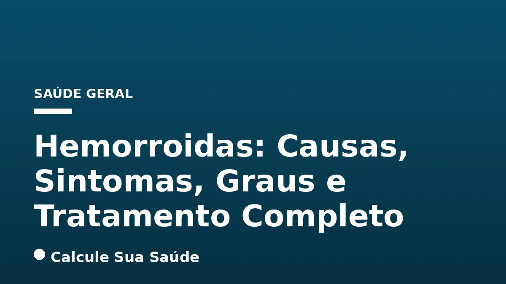

Aviso médico importante
Este conteúdo é educativo e informativo e não substitui a consulta, o diagnóstico ou o tratamento de um profissional de saúde. Em caso de sintomas, procure orientação médica.
Índice do Artigo
- 1. O Que São Hemorroidas e Seus Tipos
- 2. Causas e Principais Fatores de Risco para o Desenvolvimento de Hemorroidas
- 3. Sintomas da Doença Hemorroidária: Sinais de Alerta e Manifestações
- 4. Diagnóstico da Doença Hemorroidária
- 5. Classificação dos Graus das Hemorroidas Internas
- 6. Prevenção da Doença Hemorroidária: Hábitos Saudáveis e Evidências
- 7. Tratamento Clínico Conservador: A Primeira Linha de Abordagem
- 8. Procedimentos Minimamente Invasivos: Opções Ambulatoriais
- 9. Tratamento Cirúrgico: Hemorroidectomia e Suas Variações
- 10. Mitos Comuns e a Perspectiva Científica sobre Hemorroidas
- 11. Fatores de Risco e Medidas Preventivas: Um Resumo Essencial
- 12. Epidemiologia das Hemorroidas no Brasil: Um Panorama Nacional
- 13. Quando Procurar um Médico: Sinais de Alerta e Necessidade de Avaliação
- 14. Impacto na Qualidade de Vida e a Importância do Tratamento
- 15. Dieta e Hidratação: Pilares na Prevenção e Tratamento Conservador
- 16. O Papel do Exercício Físico e da Postura na Saúde Anorretal
- 17. Complicações da Doença Hemorroidária e a Necessidade de Intervenção
- 18. Perguntas frequentes
As hemorroidas, estruturas vasculares naturalmente presentes no canal anal, desempenham um papel crucial na continência fecal e na passagem das fezes. Contudo, quando essas estruturas se dilatam, inflamam ou se deslocam de sua posição original, surge a condição conhecida como doença hemorroidária, uma patologia que afeta significativamente a qualidade de vida de milhões de pessoas em todo o mundo. Compreender a natureza das hemorroidas é o primeiro passo para um manejo eficaz e para desmistificar uma condição frequentemente envolta em tabus.
A doença hemorroidária é multifatorial, influenciada por uma complexa interação de fatores genéticos, hábitos de vida e condições fisiológicas. Seus sintomas, que variam de sangramento indolor a dor intensa e prolapso, exigem uma avaliação médica cuidadosa para um diagnóstico preciso e para a exclusão de outras condições mais graves. Este artigo visa fornecer um panorama abrangente e cientificamente embasado sobre as hemorroidas, desde suas causas e manifestações clínicas até as abordagens preventivas e terapêuticas mais atuais.
No portal Calcule Sua Saúde, comprometemo-nos a oferecer informações de saúde rigorosas e baseadas em evidências. Este material foi elaborado para educar e capacitar nossos leitores a tomar decisões informadas sobre sua saúde, sempre ressaltando que as informações aqui apresentadas não substituem a consulta e o acompanhamento de um profissional de saúde qualificado, como um gastroenterologista ou proctologista.
Em resumo
- Hemorroidas são estruturas vasculares normais que se tornam patológicas quando inflamam ou prolapsam, causando sintomas.
- Existem hemorroidas internas (acima da linha pectínea, geralmente indolores, com sangramento) e externas (abaixo da linha pectínea, sensíveis à dor).
- Causas incluem esforço ao evacuar, dieta pobre em fibras, sedentarismo, gravidez, obesidade e predisposição genética.
- Os sintomas mais comuns são sangramento vermelho-vivo, dor, coceira, inchaço e sensação de evacuação incompleta.
- O diagnóstico é clínico, com inspeção, toque retal e anuscopia, podendo requerer exames complementares para descartar outras patologias.
- O tratamento varia do conservador (dieta, higiene, medicamentos) a procedimentos minimamente invasivos e cirurgia, dependendo do grau e da gravidade dos sintomas.
1. O Que São Hemorroidas e Seus Tipos
As hemorroidas são, em sua essência, almofadas vasculares normais localizadas no canal anal. Elas são compostas por uma rede de vasos sanguíneos, músculo liso e tecido conjuntivo, e desempenham um papel fundamental na fisiologia anorretal, auxiliando na vedação do ânus e na manutenção da continência fecal, além de proteger o esfíncter anal durante a passagem das fezes. A doença hemorroidária, ou simplesmente “hemorroidas” no sentido patológico, ocorre quando essas estruturas se tornam inchadas, inflamadas, dilatadas ou se deslocam de sua posição anatômica normal, gerando sintomas incômodos e, por vezes, dolorosos.
A compreensão dos tipos de hemorroidas é crucial para o diagnóstico e tratamento adequados, uma vez que suas características e manifestações clínicas diferem significativamente.
Hemorroidas Internas
Localizadas acima da linha pectínea (também conhecida como linha denteada), na porção superior do canal anal, as hemorroidas internas são recobertas por mucosa. Esta região é inervada por nervos viscerais, o que a torna insensível à dor. Por essa razão, as hemorroidas internas geralmente se manifestam com sangramento indolor, de cor vermelho-vivo, que pode ser notado no papel higiênico, nas fezes ou pingando no vaso sanitário. Em estágios mais avançados, elas podem prolapsar, ou seja, sair do ânus durante a evacuação ou esforço.
Hemorroidas Externas
Situadas abaixo da linha pectínea, na margem do ânus, as hemorroidas externas são recobertas por pele perianal, que é rica em terminações nervosas e, portanto, extremamente sensível à dor. Elas são visíveis e palpáveis, manifestando-se como inchaços ou nódulos na região anal. A dor e o desconforto são sintomas proeminentes, especialmente quando ocorre trombose hemorroidária, uma complicação em que um coágulo sanguíneo se forma dentro da veia, causando dor aguda e inchaço repentino.
Hemorroidas Mistas
Em muitos casos, a doença hemorroidária pode apresentar características de ambos os tipos, sendo denominada hemorroida mista. Esta condição envolve a dilatação e inflamação tanto das estruturas internas quanto das externas, resultando em uma combinação de sintomas e, por vezes, um quadro clínico mais complexo.
2. Causas e Principais Fatores de Risco para o Desenvolvimento de Hemorroidas
O desenvolvimento da doença hemorroidária é um processo multifatorial, impulsionado principalmente pelo aumento da pressão nas veias da região anorretal. Essa pressão excessiva pode levar à dilatação, inflamação e ao enfraquecimento dos tecidos de suporte das hemorroidas. Diversos fatores de risco têm sido identificados, e a compreensão deles é fundamental para a prevenção e o manejo da condição.
Esforço Excessivo Durante a Evacuação
Um dos fatores mais significativos é o esforço prolongado e repetitivo durante a defecação. Isso é frequentemente associado à constipação intestinal crônica, onde as fezes são duras e secas, exigindo maior força para serem eliminadas. Da mesma forma, episódios de diarreia crônica, que levam a evacuações frequentes e irritação, também podem contribuir para o problema.
Dieta e Estilo de Vida
Uma dieta pobre em fibras e baixa ingestão de líquidos é um fator de risco direto, pois dificulta a formação de fezes macias e volumosas, predispondo à constipação e ao esforço. O sedentarismo e longos períodos sentado ou em pé comprometem a circulação sanguínea na região pélvica e anal, aumentando a pressão venosa. Manter um peso saudável é crucial, pois a obesidade eleva a pressão intra-abdominal, um fator de risco conhecido.
Gravidez e Parto
A gravidez é um período de alto risco para o desenvolvimento de hemorroidas. O aumento do volume sanguíneo, a pressão exercida pelo útero em crescimento sobre as veias pélvicas e o esforço durante o parto vaginal são fatores que contribuem para a dilatação das veias hemorroidárias. Estima-se que até 35% das mulheres desenvolvam hemorroidas durante a gestação.
Outros Fatores de Risco
A idade é um fator relevante, pois, com o envelhecimento, os tecidos de suporte na região anal tendem a enfraquecer. A história familiar e a predisposição genética também aumentam o risco. Levantamento regular de peso, trauma anal (como o provocado por relação anal sem lubrificação adequada) e certas doenças hepáticas e cardíacas, como a ascite (acúmulo de líquido na cavidade abdominal), que elevam a pressão intra-abdominal, são outros fatores que podem desencadear ou agravar a doença hemorroidária.
3. Sintomas da Doença Hemorroidária: Sinais de Alerta e Manifestações
Os sintomas das hemorroidas podem variar amplamente em intensidade e tipo, e nem sempre estão presentes, especialmente nos estágios iniciais das hemorroidas internas. É fundamental estar atento a qualquer alteração na região anal e procurar avaliação médica ao primeiro sinal, pois alguns sintomas podem ser indicativos de outras condições mais graves.
Sangramento Retal
O sangramento é um dos sintomas mais comuns, especialmente em hemorroidas internas. Caracteriza-se por sangue vermelho-vivo, que pode ser notado no papel higiênico após a evacuação, misturado às fezes (na superfície, não misturado internamente) ou pingando no vaso sanitário. Geralmente, este sangramento é indolor. É crucial ressaltar que qualquer sangramento retal deve ser investigado por um médico para descartar outras causas, como pólipos ou câncer colorretal.
Dor e Desconforto Anal
A dor é mais proeminente em casos de hemorroidas externas, especialmente quando ocorre trombose hemorroidária, que causa dor aguda e súbita. Em outros casos, a dor pode ser uma sensação de queimação, pontadas ou um desconforto constante, como se estivesse sentado sobre um objeto. Hemorroidas internas prolapsadas também podem causar desconforto e dor se ficarem estranguladas ou inflamadas.
Coceira e Irritação (Prurido Anal)
A coceira e a irritação na região anal são sintomas frequentes, resultantes da inflamação, inchaço e, por vezes, da liberação de muco pelas hemorroidas prolapsadas, que umedece a pele perianal e causa irritação. Essa umidade constante pode levar a dermatites e agravar o prurido.
Inchaço, Caroço ou Nódulo
A presença de um inchaço, caroço ou nódulo na região anal é comum, principalmente em hemorroidas externas ou em hemorroidas internas que prolapsaram e se tornaram visíveis ou palpáveis fora do ânus. Em casos de trombose, o nódulo pode ser duro e muito doloroso.
Outros Sintomas
Alguns pacientes podem relatar uma sensação de evacuação incompleta, especialmente quando há hemorroidas internas exteriorizadas. Em casos mais avançados, pode ocorrer a saída involuntária de muco ou de pequenas quantidades de fezes, devido à dificuldade de vedação completa do ânus pelo prolapso hemorroidário.
4. Diagnóstico da Doença Hemorroidária
O diagnóstico da doença hemorroidária é um processo clínico que exige a expertise de um profissional de saúde, como um gastroenterologista ou proctologista. Baseia-se em uma combinação de história clínica detalhada, exame físico e, em alguns casos, exames complementares. A precisão diagnóstica é vital para diferenciar as hemorroidas de outras condições anorretais que podem apresentar sintomas semelhantes.
Anamnese Detalhada
O médico iniciará com uma conversa aprofundada sobre os sintomas do paciente, incluindo a frequência, intensidade e características do sangramento, dor, coceira, presença de inchaços, hábitos intestinais (constipação ou diarreia), dieta, histórico familiar e fatores de risco. Informações sobre o estilo de vida e outras condições médicas também são relevantes.
Exame Físico
O exame físico é a pedra angular do diagnóstico e geralmente inclui:
- Inspeção Visual: O médico examina a região anal e perianal para identificar a presença de hemorroidas externas, inchaço, inflamação, fissuras, fístulas ou outras anomalias. Esta etapa permite a visualização direta de hemorroidas externas e, por vezes, de hemorroidas internas prolapsadas.
- Toque Retal: Com um dedo lubrificado e enluvado, o médico insere suavemente o dedo no ânus para avaliar o tônus do esfíncter anal, a presença de massas, irregularidades ou dor na parede retal. Embora as hemorroidas internas não sejam sempre palpáveis, o toque retal pode ajudar a identificar outras condições.
Exames Complementares
Para uma avaliação mais aprofundada ou para descartar outras patologias, o médico pode solicitar exames adicionais:
- Anuscopia: Este é o exame mais comum e eficaz para visualizar as hemorroidas internas. Um anuscópio, um tubo curto e rígido com uma fonte de luz, é inserido no canal anal, permitindo a visualização direta das hemorroidas internas e a classificação de seu grau.
- Retossigmoidoscopia ou Colonoscopia: Em casos de sangramento retal, especialmente em pacientes com mais de 40-50 anos, histórico familiar de câncer colorretal, ou sintomas atípicos, a retossigmoidoscopia (avaliação do reto e sigmoide) ou a colonoscopia (avaliação de todo o intestino grosso) podem ser necessárias. Estes exames são cruciais para descartar condições mais graves, como pólipos, doença inflamatória intestinal ou tumores colorretais, que podem mimetizar os sintomas das hemorroidas.
É fundamental que o paciente não hesite em procurar ajuda médica ao notar qualquer sintoma anal, pois o diagnóstico precoce é essencial para um tratamento eficaz e para a exclusão de condições potencialmente mais sérias.
5. Classificação dos Graus das Hemorroidas Internas
A classificação das hemorroidas internas em graus é um sistema amplamente aceito na prática clínica, essencial para orientar a escolha do tratamento mais adequado. Essa categorização baseia-se na intensidade do prolapso, ou seja, na capacidade da hemorroida de exteriorizar-se através do ânus e na necessidade de intervenção para seu retorno à posição original.
A linha pectínea serve como um marco anatômico importante: hemorroidas internas se originam acima dela. A progressão da doença geralmente segue os seguintes graus:
| Grau | Descrição do Prolapso | Sintomas Comuns | Abordagem Terapêutica Inicial |
|---|---|---|---|
| Grau I | Sangram, mas não prolapsam para fora do canal anal. Permanecem internas. | Sangramento indolor, prurido leve. | Tratamento clínico conservador (dieta, fibras, higiene). |
| Grau II | Prolapsam (saem) durante a evacuação, mas retornam espontaneamente para dentro do ânus. | Sangramento, desconforto, sensação de peso, prolapso transitório. | Tratamento clínico conservador, procedimentos minimamente invasivos (ligadura elástica, escleroterapia). |
| Grau III | Prolapsam durante a evacuação e só retornam quando reintroduzidas manualmente pelo paciente. | Sangramento, dor, desconforto significativo, prolapso persistente que exige redução manual. | Procedimentos minimamente invasivos (ligadura elástica, THD), cirurgia em casos selecionados. |
| Grau IV | Ficam prolapsadas de forma permanente e não podem ser reduzidas manualmente. | Dor intensa, sangramento, inchaço, trombose frequente, dificuldade de higiene, prolapso irredutível. | Tratamento cirúrgico (hemorroidectomia) é frequentemente necessário. |
É importante notar que as hemorroidas externas não são classificadas por graus de prolapso, mas sim pela presença de sintomas como dor, inchaço e trombose. A classificação das hemorroidas internas permite ao médico e ao paciente entender a progressão da doença e discutir as opções de tratamento mais eficazes para cada estágio.
6. Prevenção da Doença Hemorroidária: Hábitos Saudáveis e Evidências
A prevenção da doença hemorroidária é fundamental e, na maioria dos casos, envolve a adoção de hábitos de vida saudáveis que visam evitar o aumento da pressão nas veias da região anal e promover um trânsito intestinal regular. A modificação do estilo de vida é a primeira linha de defesa e tem um impacto significativo na redução do risco de desenvolvimento ou agravamento das hemorroidas.
Dieta Rica em Fibras e Hidratação Adequada
A base da prevenção reside em uma dieta equilibrada. O consumo adequado de fibras alimentares (presentes em frutas, vegetais, grãos integrais, aveia, nozes e castanhas) é crucial para amolecer as fezes, aumentar seu volume e facilitar a evacuação, reduzindo o esforço. Paralelamente, a hidratação é vital: beber pelo menos 1,5 a 2 litros de água por dia ajuda a manter as fezes hidratadas e evita o ressecamento, que é um precursor da constipação.
Hábitos Intestinais Saudáveis
Evitar o esforço excessivo ao evacuar é uma das medidas preventivas mais importantes. Não se deve fazer força para defecar, e é essencial atender prontamente à vontade de evacuar, sem segurar as fezes, pois isso pode levar ao seu ressecamento e endurecimento. Além disso, evitar permanecer muito tempo sentado no vaso sanitário, lendo ou utilizando dispositivos eletrônicos, é recomendado, pois essa posição aumenta a pressão sobre as veias anais.
Atividade Física e Controle de Peso
A prática regular de atividade física, como a caminhada, é benéfica por diversos motivos. Ela ativa a circulação sanguínea, promove o trânsito intestinal e auxilia no combate à obesidade, que é um fator de risco para hemorroidas devido ao aumento da pressão intra-abdominal. Manter um peso saudável é, portanto, uma medida preventiva eficaz.
Outras Recomendações
Evitar o levantamento regular de peso excessivo e o trauma anal (por exemplo, através de lubrificação adequada em práticas sexuais) também são medidas que podem contribuir para a prevenção. Em suma, a prevenção das hemorroidas é um reflexo de um estilo de vida saudável e consciente, focado na manutenção da regularidade intestinal e na redução da pressão sobre a região anorretal.
7. Tratamento Clínico Conservador: A Primeira Linha de Abordagem
O tratamento clínico conservador é a abordagem inicial para a maioria dos pacientes com doença hemorroidária, especialmente nos graus I e II, e visa aliviar os sintomas, reduzir a inflamação e prevenir a progressão da doença. Esta estratégia é baseada em modificações no estilo de vida e no uso de medicamentos que atuam localmente ou sistemicamente.
Medidas Higienodietéticas
A base do tratamento conservador são as modificações na dieta e na higiene. O aumento da ingestão de fibras e líquidos, conforme detalhado na seção de prevenção, é crucial para amolecer as fezes e facilitar a evacuação. Banhos de assento com água morna, por 15 a 20 minutos, várias vezes ao dia, podem proporcionar alívio significativo da dor, inchaço e espasmos musculares. A higiene anal deve ser feita com ducha de água após a evacuação, em vez de papel higiênico, para evitar irritação e trauma na região sensível.
Medicamentos Tópicos
Pomadas e cremes são frequentemente prescritos para alívio sintomático. Eles podem conter:
- Anestésicos locais: Como lidocaína ou cinchocaína, que proporcionam alívio temporário da dor e da coceira.
- Anti-inflamatórios: Corticosteroides (ex: hidrocortisona, fluocortolona) para reduzir a inflamação e o inchaço. O uso prolongado deve ser evitado devido a potenciais efeitos adversos.
- Cicatrizantes e protetores: Substâncias que ajudam na regeneração da pele e formam uma barreira protetora.
- Anticoagulantes: Como a heparina, que pode ser utilizada em casos de trombose para ajudar na reabsorção do coágulo.
É importante usar esses medicamentos sob orientação médica e apenas pelo período recomendado.
Medicamentos Orais
Para o controle da dor e da inflamação, analgésicos comuns (paracetamol, ibuprofeno) e anti-inflamatórios não esteroides (diclofenaco, cetoprofeno, nimesulida) podem ser indicados. Em alguns casos, laxantes formadores de massa ou osmóticos podem ser usados para auxiliar na regularização do trânsito intestinal, sempre com cautela e sob supervisão médica.
Flavonoides
Os flavonoides, como a diosmina e a hesperidina, são medicamentos venotônicos que têm demonstrado eficácia na melhora dos sintomas da doença hemorroidária. Estudos indicam que eles podem reduzir o sangramento agudo, melhorar a dor pós-operatória, diminuir a exsudação perianal e a recorrência dos sintomas após um episódio agudo. Seu mecanismo de ação envolve o fortalecimento das paredes dos vasos sanguíneos e a redução da inflamação.
Nível de Evidência
As medidas higienodietéticas, especialmente o aumento da ingestão de fibras, possuem um forte nível de evidência para a melhora geral dos sintomas, redução do sangramento e diminuição da recorrência após procedimentos ambulatoriais. Os flavonoides também demonstraram eficácia, particularmente no manejo do sangramento e na melhora global dos sintomas.
8. Procedimentos Minimamente Invasivos: Opções Ambulatoriais
Quando o tratamento clínico conservador não é suficiente para controlar os sintomas, ou para hemorroidas internas de graus II e III, procedimentos minimamente invasivos (também conhecidos como ambulatoriais) são frequentemente a próxima etapa. Essas técnicas são realizadas em consultório ou centro cirúrgico com anestesia local e oferecem uma recuperação mais rápida e menos dolorosa em comparação com a cirurgia convencional.
Ligadura Elástica
Considerada o procedimento mais comum e eficaz para hemorroidas internas de grau II e III, a ligadura elástica envolve a aplicação de um pequeno anel de borracha na base da hemorroida. Este anel interrompe o fluxo sanguíneo para o tecido hemorroidário, fazendo com que ele resseque e caia em poucos dias (geralmente de 5 a 7 dias), junto com o anel, durante uma evacuação. O procedimento é geralmente indolor, pois é realizado acima da linha pectínea, em uma área com pouca sensibilidade à dor. Pode ser necessário repetir o procedimento em sessões para tratar todas as hemorroidas.
Escleroterapia
A escleroterapia é indicada para hemorroidas internas menores (grau I e II) ou em pacientes que não podem ser submetidos a outros procedimentos. Consiste na injeção de uma substância esclerosante (como fenol a 5% em óleo de amêndoa) diretamente dentro da hemorroida. Essa substância provoca uma reação inflamatória que leva à fibrose e retração dos vasos, reduzindo o tamanho da hemorroida e melhorando os sintomas, principalmente o sangramento.
Coagulação por Infravermelho
Neste procedimento, uma sonda emite calor infravermelho para coagular os vasos sanguíneos que nutrem a hemorroida. O calor causa a esclerose do tecido hemorroidário, levando à sua retração. É mais indicado para hemorroidas de grau I e II, sendo rápido e geralmente bem tolerado.
Desarterialização Transanal Guiada por Doppler (THD)
A THD é uma técnica mais recente que utiliza um ultrassom Doppler para localizar as artérias que fornecem sangue às hemorroidas. Uma vez localizadas, essas artérias são ligadas (suturadas), interrompendo o fluxo sanguíneo. Além disso, o tecido hemorroidário prolapsado é reposicionado e fixado internamente. Este procedimento é realizado sem cortes externos, o que resulta em menos dor pós-operatória e uma recuperação mais rápida, sendo eficaz para hemorroidas de grau II e III.
Hemorroidoplastia a Laser (LHP)
A hemorroidoplastia a laser utiliza energia laser para reduzir o tecido hemorroidário. Uma fibra óptica é inserida na hemorroida, e a energia laser é aplicada para causar a fotocoagulação e retração do tecido. Esta técnica é associada a menos dor e um tempo de recuperação mais rápido em comparação com a cirurgia convencional, sendo uma opção para diversos graus de hemorroidas.
9. Tratamento Cirúrgico: Hemorroidectomia e Suas Variações
O tratamento cirúrgico, conhecido como hemorroidectomia, é geralmente reservado para casos mais avançados da doença hemorroidária, como hemorroidas de grau III volumosas e grau IV, ou quando os tratamentos conservadores e minimamente invasivos não foram eficazes. Também pode ser indicado em situações de trombose extensa, prolapso permanente ou sangramento que não cede. Embora associada a um período de recuperação mais longo e potencialmente mais doloroso, a cirurgia oferece a solução mais definitiva para a doença.
Hemorroidectomia Convencional (Técnica de Milligan-Morgan)
A hemorroidectomia convencional é o método cirúrgico mais tradicional e ainda amplamente utilizado. Consiste na remoção cirúrgica das hemorroidas, juntamente com o excesso de tecido mucoso e cutâneo, utilizando bisturi, eletrocautério ou laser. Existem diferentes técnicas, mas a de Milligan-Morgan (aberta) é uma das mais comuns, onde as feridas cirúrgicas são deixadas abertas para cicatrização por segunda intenção. Embora altamente eficaz na remoção completa das hemorroidas, esta técnica é conhecida por apresentar maior tempo de recuperação e pode estar associada a dor pós-operatória significativa, que é manejada com analgésicos e cuidados locais.
Hemorroidectomia com Grampeador (PPH - Procedimento para Prolapso e Hemorroidas)
A hemorroidectomia com grampeador, também conhecida como PPH (do inglês Procedure for Prolapse and Hemorrhoids) ou cirurgia de Longo, é uma técnica que visa reposicionar o tecido hemorroidário prolapsado e reduzir o fluxo sanguíneo para as hemorroidas. Em vez de remover as hemorroidas individualmente, um grampeador circular é utilizado para excisar uma faixa de mucosa e submucosa acima da linha pectínea, elevando o tecido prolapsado e fixando-o em sua posição anatômica normal. A principal vantagem desta técnica é a menor dor pós-operatória, uma vez que não há feridas na pele sensível do ânus. No entanto, pode haver um risco ligeiramente maior de recorrência e outras complicações específicas, como estenose anal.
Considerações Pós-Operatórias
Independentemente da técnica cirúrgica, o período pós-operatório exige cuidados específicos, incluindo manejo da dor, banhos de assento, dieta rica em fibras para evitar constipação e uso de laxantes quando necessário. O objetivo é garantir uma cicatrização adequada e minimizar o desconforto. A escolha da técnica cirúrgica dependerá da avaliação do proctologista, do grau das hemorroidas, da preferência do paciente e da experiência do cirurgião.
10. Mitos Comuns e a Perspectiva Científica sobre Hemorroidas
A doença hemorroidária é cercada por muitos mitos e informações incorretas, o que pode gerar confusão e ansiedade nos pacientes. É crucial desmistificar essas crenças com base em evidências científicas para promover uma compreensão mais precisa da condição e incentivar a busca por tratamento adequado.
| Mito Comum | O Que a Ciência Diz (Fato) |
|---|---|
| Pimenta causa hemorroidas. | Não há relação causal direta entre a ingestão de pimenta vermelha e o desenvolvimento de hemorroidas. No entanto, alimentos picantes podem agravar os sintomas (ardência, desconforto) durante crises, devido a substâncias irritativas e vasodilatadoras. |
| Sexo anal causa hemorroida. | A prática de sexo anal não é uma causa direta de hemorroidas. Contudo, a falta de lubrificação adequada ou trauma excessivo pode causar microtraumas na região anal, que podem agravar hemorroidas existentes ou levar a outras lesões, como fissuras. Deve ser evitado durante crises. |
| Hemorroida só aparece em quem faz força. | Embora o esforço excessivo ao evacuar seja um fator de risco importante, ele não é o único. Fatores como predisposição genética, constipação crônica, gravidez, sedentarismo, obesidade e permanecer muito tempo sentado também contribuem para o desenvolvimento da doença. |
| Sangrou? É só hemorroida. | NÃO! Sangramento retal é um sintoma que exige investigação médica imediata. Embora possa ser causado por hemorroidas, também pode indicar condições mais graves, como fissura anal, doença inflamatória intestinal, pólipos ou câncer colorretal. O diagnóstico precoce é vital. |
| Hemorroida sempre precisa de cirurgia. | A maioria dos casos de hemorroidas pode ser tratada com sucesso por meio de medidas conservadoras (dieta, higiene, medicamentos) e procedimentos minimamente invasivos. A cirurgia é reservada para casos mais avançados ou refratários a outras abordagens. |
| Se não dói, não é hemorroida. | Este é um equívoco comum. Hemorroidas internas, especialmente nos graus iniciais, são frequentemente indolores devido à ausência de nervos sensíveis à dor na região. O único sinal pode ser sangramento, coceira ou a sensação de um inchaço. |
| Hemorroidas podem evoluir para câncer. | Não há evidências científicas que comprovem que a doença hemorroidária possa evoluir para câncer colorretal. São condições distintas. No entanto, como ambas podem causar sangramento anal, a investigação médica é crucial para um diagnóstico diferencial preciso e para descartar malignidade. |
Buscar informações em fontes confiáveis e consultar um profissional de saúde são passos essenciais para desmistificar a doença e garantir o tratamento correto.
11. Fatores de Risco e Medidas Preventivas: Um Resumo Essencial
A prevenção da doença hemorroidária é um pilar fundamental para a saúde anorretal. Compreender os fatores que aumentam o risco de desenvolver hemorroidas permite a adoção de medidas proativas para mitigar esses riscos. A tabela a seguir resume os principais fatores de risco e as correspondentes estratégias preventivas baseadas em evidências.
| Fator de Risco | Medida Preventiva Recomendada |
|---|---|
| Esforço durante a evacuação (constipação/diarreia crônica) | Dieta rica em fibras (frutas, vegetais, grãos integrais), hidratação adequada (1,5-2L de água/dia), não segurar as fezes, não fazer força excessiva. |
| Dieta pobre em fibras e baixa ingestão de líquidos | Aumentar o consumo de alimentos ricos em fibras e beber bastante água. Considerar uma dieta equilibrada. |
| Sedentarismo e longos períodos sentado/em pé | Praticar atividade física regularmente (caminhada), evitar longos períodos na mesma posição, fazer pausas para movimentar-se. |
| Gravidez e parto | Manter dieta rica em fibras e boa hidratação durante a gestação, praticar exercícios leves aprovados pelo médico. |
| Obesidade | Manter um peso saudável através de dieta balanceada e atividade física regular. |
| Idade (enfraquecimento dos tecidos) | Manter estilo de vida saudável ao longo da vida para preservar a integridade dos tecidos. |
| História familiar/predisposição genética | Adoção rigorosa das medidas preventivas, mesmo sem sintomas, devido ao risco aumentado. |
| Levantamento regular de peso | Evitar levantar pesos excessivos de forma inadequada; usar técnicas corretas de levantamento. |
| Trauma anal (ex: relação anal) | Uso de lubrificação adequada e evitar práticas que causem trauma na região anal. |
| Doenças hepáticas e cardíacas (com ascite) | Manejo adequado das condições médicas subjacentes com acompanhamento especializado. |
A incorporação dessas práticas no dia a dia não apenas ajuda a prevenir hemorroidas, mas também contribui para a saúde geral e o bem-estar.
12. Epidemiologia das Hemorroidas no Brasil: Um Panorama Nacional
A doença hemorroidária é uma condição de alta prevalência global, afetando uma parcela significativa da população em algum momento da vida. No Brasil, os dados epidemiológicos reforçam a importância da conscientização e do acesso a informações e tratamentos adequados. Estima-se que cerca de 50% da população mundial experimentará hemorroidas em algum momento, e o Brasil reflete essa tendência com números expressivos.
Prevalência e Incidência no Brasil
Estudos nacionais indicam que aproximadamente 25% da população adulta brasileira já relatou sintomas relacionados às hemorroidas. Isso se traduz em um número estimado de 5 milhões de pessoas sofrendo com a condição, com cerca de 500.000 novos casos surgindo a cada ano. Esses números sublinham a relevância da doença como um problema de saúde pública no país.
Faixa Etária e Gênero
A doença hemorroidária é mais comum em indivíduos entre 45 e 65 anos de idade, com uma diminuição na prevalência após os 65 anos. O desenvolvimento de hemorroidas antes dos 20 anos é considerado incomum. A prevalência geral é semelhante entre homens e mulheres. No entanto, ao analisar a população acima de 50 anos com doença hemorroidária, as mulheres representam uma proporção maior (cerca de 65% dos casos), o que é provavelmente atribuído aos fatores de risco associados à gravidez e ao parto.
Curiosamente, os homens tendem a buscar assistência médica mais tardiamente, o que pode justificar uma maior indicação de cirurgia em casos avançados entre a população masculina, em comparação com as mulheres que, por vezes, procuram atendimento mais cedo devido aos sintomas impactantes durante a gravidez.
Dados de Internações e Mortalidade no SUS
Dados do Sistema de Informações Hospitalares do Ministério da Saúde (SIH/SUS) revelam a carga da doença no sistema público de saúde. Na década de 2010 a 2019, mais de 290 mil cirurgias para tratamento de hemorroidas foram realizadas na rede pública. A faixa etária mais acometida por internações nesse período foi de 40-49 anos (27,14%), seguida por 30-39 anos (22,33%) e 50-59 anos (22,28%).
As mulheres apresentaram uma maior prevalência em internações (57,17%), reforçando a influência dos fatores de risco específicos do gênero. A região Sudeste do Brasil registrou o maior número de internações (45,68%), o que pode estar relacionado à densidade populacional e à disponibilidade de serviços de saúde. A taxa de mortalidade por doença hemorroidária no período analisado foi extremamente baixa (0,03%, totalizando 89 óbitos), com a maioria das mortes ocorrendo em indivíduos entre 60-69 anos, geralmente associadas a complicações raras ou a comorbidades.
Esses dados reforçam a necessidade de campanhas de conscientização, acesso facilitado ao diagnóstico e tratamento precoce, e a promoção de hábitos de vida saudáveis para reduzir a incidência e o impacto da doença hemorroidária na população brasileira.
13. Quando Procurar um Médico: Sinais de Alerta e Necessidade de Avaliação
Embora as hemorroidas sejam uma condição comum e, muitas vezes, benigna, é fundamental saber quando procurar um profissional de saúde. A automedicação ou a postergação da consulta podem levar ao agravamento dos sintomas, complicações ou, o que é mais grave, mascarar condições subjacentes que exigem atenção médica urgente. A avaliação de um gastroenterologista ou proctologista é indispensável para um diagnóstico preciso e um plano de tratamento adequado.
Sangramento Retal
Qualquer sangramento retal, especialmente se for de cor vermelho-vivo, deve ser um sinal de alerta e motivar uma consulta médica. Embora o sangramento indolor seja característico de hemorroidas internas, ele também pode ser um sintoma de condições mais sérias, como fissuras anais, diverticulose, doença inflamatória intestinal, pólipos ou câncer colorretal. Nunca assuma que o sangramento é “apenas hemorroida” sem uma avaliação profissional.
Dor Intensa ou Persistente
Dor anal intensa, especialmente se for súbita e acompanhada de um inchaço duro na região, pode indicar uma trombose hemorroidária, uma condição que requer atenção médica para alívio da dor e, por vezes, intervenção. Dor persistente que não melhora com medidas caseiras também deve ser investigada.
Prolapso Irredutível ou Acompanhado de Dor
Se uma hemorroida prolapsada não retorna espontaneamente ou não pode ser reintroduzida manualmente, ou se o prolapso é acompanhado de dor intensa e inchaço, pode ser um sinal de estrangulamento ou trombose, necessitando de avaliação imediata.
Coceira e Irritação Crônica
Prurido anal persistente, que não melhora com medidas de higiene e pomadas de venda livre, pode indicar inflamação crônica, infecção ou outras condições dermatológicas que precisam de diagnóstico e tratamento específicos.
Mudanças nos Hábitos Intestinais
Alterações inexplicáveis nos hábitos intestinais, como constipação ou diarreia persistente, fezes finas ou em fita, ou sensação de evacuação incompleta, especialmente se acompanhadas de sangramento, são motivos para procurar um médico, pois podem indicar problemas no trato gastrointestinal inferior.
Sintomas Sistêmicos
Se os sintomas anais forem acompanhados de febre, calafrios, perda de peso inexplicada, fadiga ou anemia (devido a sangramento crônico), a consulta médica é urgente, pois podem indicar uma condição sistêmica ou uma complicação grave.
Em resumo, qualquer sintoma anal que cause desconforto significativo, persista por mais de alguns dias, se agrave ou seja acompanhado de sangramento, dor intensa ou alterações nos hábitos intestinais, deve ser avaliado por um médico. A detecção precoce e o tratamento adequado são cruciais para a saúde e bem-estar.
14. Impacto na Qualidade de Vida e a Importância do Tratamento
A doença hemorroidária, embora muitas vezes vista como uma condição menor ou embaraçosa, pode ter um impacto significativo e debilitante na qualidade de vida dos indivíduos. Os sintomas persistentes e o desconforto associado podem afetar diversas esferas da vida diária, desde a produtividade no trabalho até as interações sociais e a saúde mental.
Limitações Físicas e Desconforto Constante
A dor, o prurido anal e a sensação de inchaço ou prolapso podem tornar atividades simples como sentar, caminhar ou evacuar extremamente desconfortáveis. Em casos de trombose hemorroidária, a dor pode ser excruciante, incapacitando o paciente para suas rotinas. O sangramento recorrente, mesmo que indolor, pode levar à anemia ferropriva se não for tratado, causando fadiga, fraqueza e palidez.
Impacto Psicossocial
A vergonha e o constrangimento associados aos sintomas anais frequentemente levam os pacientes a adiar a busca por ajuda médica. Esse atraso pode resultar no agravamento da condição e em um sofrimento prolongado. A coceira persistente pode ser socialmente embaraçosa e interferir no sono, enquanto o medo de sangrar ou de ter um prolapso em público pode gerar ansiedade e isolamento social. A qualidade de vida sexual também pode ser afetada devido à dor e ao desconforto.
Produtividade e Bem-Estar Geral
A dor e o desconforto podem reduzir a concentração e a produtividade no trabalho ou nos estudos. A necessidade constante de gerenciar os sintomas, como a higiene após cada evacuação ou a aplicação de medicamentos tópicos, pode ser estressante e consumir tempo. A interrupção do sono devido à coceira noturna ou à dor também contribui para a fadiga e irritabilidade, diminuindo o bem-estar geral.
A Importância do Tratamento
O tratamento adequado das hemorroidas não se limita apenas ao alívio dos sintomas físicos, mas também visa restaurar a qualidade de vida do paciente. Ao abordar a condição de forma eficaz, seja por meio de mudanças no estilo de vida, medicamentos, procedimentos minimamente invasivos ou cirurgia, é possível eliminar o desconforto, prevenir complicações e permitir que o indivíduo retome suas atividades diárias com confiança e bem-estar. A educação sobre a doença e a desmistificação são passos cruciais para encorajar os pacientes a procurar ajuda e evitar o sofrimento desnecessário.
15. Dieta e Hidratação: Pilares na Prevenção e Tratamento Conservador
A dieta e a hidratação são, sem dúvida, os pilares mais importantes na prevenção e no tratamento conservador da doença hemorroidária. A manipulação desses fatores pode ter um impacto profundo na consistência das fezes, na frequência das evacuações e, consequentemente, na pressão exercida sobre as veias anais. Adotar hábitos alimentares e de hidratação adequados é a primeira e mais eficaz medida para gerenciar e prevenir as hemorroidas.
O Papel Essencial das Fibras Alimentares
As fibras alimentares são componentes vegetais que não são digeridos pelo corpo humano. Elas se dividem em dois tipos principais:
- Fibras Solúveis: Presentes em alimentos como aveia, cevada, frutas (maçãs, peras, frutas cítricas), leguminosas (feijão, lentilha) e vegetais (cenoura, brócolis). Elas absorvem água e formam um gel no intestino, amolecendo as fezes e facilitando sua passagem.
- Fibras Insolúveis: Encontradas em grãos integrais, farelo de trigo, casca de frutas e vegetais folhosos. Elas aumentam o volume das fezes, acelerando o trânsito intestinal e prevenindo a constipação.
Uma ingestão diária recomendada de 25 a 35 gramas de fibras é crucial. Aumentar gradualmente o consumo de alimentos como frutas, vegetais, legumes e grãos integrais ajuda a formar fezes macias e volumosas, reduzindo a necessidade de esforço durante a evacuação. Isso, por sua vez, diminui a pressão sobre as hemorroidas e minimiza o risco de sangramento e prolapso.
A Indispensável Hidratação
A ingestão adequada de líquidos é tão importante quanto o consumo de fibras. A água é essencial para que as fibras desempenhem sua função de amolecer as fezes. Sem hidratação suficiente, mesmo uma dieta rica em fibras pode não ser eficaz, pois as fezes podem se tornar secas e duras. Recomenda-se beber pelo menos 1,5 a 2 litros de água por dia, e mais em climas quentes ou durante a prática de exercícios físicos. Chás e sucos naturais sem açúcar também podem contribuir para a hidratação, mas a água pura é sempre a melhor opção.
Evitando Alimentos Agravantes
Embora a pimenta não cause hemorroidas, alimentos muito condimentados ou picantes podem irritar a região anal e agravar os sintomas durante uma crise. O consumo excessivo de álcool e cafeína pode levar à desidratação e, consequentemente, à constipação. Alimentos ultraprocessados, ricos em gorduras e pobres em fibras, também devem ser evitados, pois contribuem para um trânsito intestinal irregular.
Em resumo, uma dieta rica em fibras e uma hidratação abundante são estratégias simples, mas extremamente eficazes, tanto na prevenção quanto no manejo dos sintomas da doença hemorroidária, promovendo a saúde intestinal e o bem-estar geral.
16. O Papel do Exercício Físico e da Postura na Saúde Anorretal
Além da dieta e hidratação, o exercício físico regular e a atenção à postura desempenham um papel significativo na prevenção e no manejo da doença hemorroidária. A inatividade e certas posturas podem contribuir para o aumento da pressão nas veias anais, enquanto a atividade física promove a circulação e a saúde intestinal.
Benefícios do Exercício Físico
A prática regular de atividade física, como a caminhada, natação ou ciclismo, oferece múltiplos benefícios que indiretamente protegem contra as hemorroidas:
- Melhora do Trânsito Intestinal: O movimento físico estimula os músculos do intestino, promovendo um trânsito intestinal mais regular e prevenindo a constipação. Isso reduz o tempo de permanência das fezes no cólon e a necessidade de esforço durante a evacuação.
- Ativação da Circulação Sanguínea: O exercício melhora a circulação geral do corpo, incluindo a região pélvica e anal. Uma boa circulação ajuda a prevenir o acúmulo de sangue nas veias hemorroidárias e a reduzir a inflamação.
- Controle de Peso: A atividade física é um componente essencial para manter um peso saudável. A obesidade é um fator de risco conhecido para hemorroidas, pois o excesso de peso aumenta a pressão intra-abdominal, que se reflete nas veias anais.
É importante, no entanto, evitar exercícios que envolvam levantamento de peso excessivo ou que causem grande tensão abdominal, especialmente durante uma crise hemorroidária, pois isso pode agravar a condição. Atividades de baixo impacto são geralmente mais seguras e benéficas.
A Importância da Postura
A postura, especialmente durante a evacuação e em períodos prolongados de sentar, também influencia a pressão sobre as hemorroidas:
- No Vaso Sanitário: Permanecer muito tempo sentado no vaso sanitário, lendo ou usando dispositivos eletrônicos, aumenta a pressão sobre as veias anais. É recomendado limitar o tempo no vaso a poucos minutos e não fazer força excessiva. Uma postura mais agachada (com os joelhos mais elevados que os quadris, usando um banquinho) pode facilitar a evacuação e reduzir o esforço.
- No Dia a Dia: Evitar longos períodos sentado ou em pé sem pausas para movimentar-se. Se o trabalho exige longas horas sentado, é aconselhável levantar-se e caminhar por alguns minutos a cada hora para aliviar a pressão na região pélvica e melhorar a circulação.
Ao integrar o exercício físico regular e a atenção à postura no estilo de vida, é possível fortalecer as defesas do corpo contra a doença hemorroidária e promover uma saúde anorretal duradoura.
17. Complicações da Doença Hemorroidária e a Necessidade de Intervenção
Embora a doença hemorroidária seja frequentemente benigna, ela pode levar a complicações que exigem atenção médica imediata e, por vezes, intervenção. A compreensão dessas complicações é crucial para que os pacientes busquem tratamento em tempo hábil e evitem o agravamento do quadro.
Trombose Hemorroidária
Esta é uma das complicações mais comuns e dolorosas, especialmente em hemorroidas externas. Ocorre quando um coágulo sanguíneo se forma dentro de uma veia hemorroidária, causando dor aguda e súbita, inchaço e a formação de um nódulo duro e azulado na margem anal. A dor geralmente atinge o pico nas primeiras 48-72 horas e pode ser excruciante. O tratamento pode envolver medidas conservadoras (analgésicos, banhos de assento) ou, em casos de dor intensa e recente, uma pequena incisão para remover o coágulo (trombectomia), proporcionando alívio imediato.
Prolapso Estrangulado
Em hemorroidas internas de grau III ou IV, o prolapso pode se tornar estrangulado. Isso acontece quando o esfíncter anal se contrai ao redor da hemorroida prolapsada, cortando seu suprimento sanguíneo. A hemorroida fica inchada, dolorosa, azulada e não pode ser reduzida manualmente. Esta é uma emergência médica que requer intervenção cirúrgica imediata para evitar a necrose do tecido.
Sangramento Crônico e Anemia
O sangramento retal, embora geralmente indolor, pode ser crônico e levar à perda significativa de sangue ao longo do tempo. Se não for tratado, o sangramento persistente pode resultar em anemia ferropriva, manifestada por fadiga, fraqueza, palidez, falta de ar e tontura. Nesses casos, além do tratamento das hemorroidas, pode ser necessária a suplementação de ferro.
Infecção e Abscesso
Em casos raros, as hemorroidas podem ulcerar ou necrosar, aumentando o risco de infecção bacteriana. Isso pode levar à formação de um abscesso perianal, uma coleção de pus na região anal, que causa dor intensa, inchaço, febre e requer drenagem cirúrgica. A má higiene na presença de prolapso também pode contribuir para infecções.
Incontinência Fecal e Irritação Perianal
Hemorroidas prolapsadas, especialmente as de grau IV, podem dificultar a vedação completa do ânus, levando à saída involuntária de muco ou pequenas quantidades de fezes (incontinência fecal leve). Isso pode causar irritação crônica da pele perianal (dermatite), coceira intensa e desconforto, impactando significativamente a higiene e a qualidade de vida do paciente.
A presença de qualquer uma dessas complicações sublinha a importância de não ignorar os sintomas das hemorroidas e de procurar avaliação médica para um manejo adequado e oportuno.
18. Perguntas frequentes
Hemorroida é contagiosa?
Não, a doença hemorroidária não é contagiosa. Ela é uma condição vascular que se desenvolve devido a fatores como aumento da pressão nas veias anais, constipação, gravidez e predisposição genética, e não é transmitida de pessoa para pessoa.
Posso prevenir hemorroidas com a alimentação?
Sim, a alimentação desempenha um papel crucial na prevenção. Uma dieta rica em fibras (frutas, vegetais, grãos integrais) e uma hidratação adequada (beber bastante água) ajudam a manter as fezes macias e a regular o trânsito intestinal, reduzindo o esforço ao evacuar e, consequentemente, o risco de hemorroidas.
Quando devo procurar um médico para hemorroidas?
Você deve procurar um médico (gastroenterologista ou proctologista) se notar qualquer sangramento retal, dor intensa ou persistente, inchaço ou caroço na região anal, prolapso que não retorna ou qualquer alteração nos seus hábitos intestinais. É essencial descartar outras condições mais graves.
Hemorroidas podem virar câncer?
Não, a doença hemorroidária não tem potencial de evolução para câncer. São condições distintas. No entanto, ambas podem apresentar sangramento anal, o que reforça a necessidade de diagnóstico médico para descartar a possibilidade de câncer colorretal.
Qual o tratamento mais eficaz para hemorroidas?
O tratamento mais eficaz depende do grau e da gravidade dos sintomas. Para casos iniciais, medidas conservadoras (dieta, higiene, medicamentos) são eficazes. Para graus mais avançados, procedimentos minimamente invasivos (ligadura elástica, escleroterapia) ou cirurgia (hemorroidectomia) podem ser necessários. A escolha é feita pelo médico.
É normal sentir dor após a cirurgia de hemorroidas?
Sim, é comum sentir dor após a cirurgia de hemorroidas, especialmente na hemorroidectomia convencional, devido à sensibilidade da região. O manejo da dor é feito com analgésicos e cuidados locais, como banhos de assento, para garantir uma recuperação mais confortável.
O que são hemorroidas trombosadas?
Hemorroidas trombosadas ocorrem quando um coágulo sanguíneo se forma dentro de uma hemorroida, geralmente externa. Isso causa dor súbita e intensa, inchaço e um nódulo duro na região anal. É uma complicação que requer avaliação médica para alívio da dor e, se necessário, remoção do coágulo.
Leia também
Referências e Fontes
1. drderival.com. Hemorroidas. Disponível em: drderival.com
2. rbmfc.org.br. Epidemiologia das Hemorroidas: Fatores de Risco e Prevalência Revelados. Disponível em: rbmfc.org.br
3. institutojorgereina.com.br. Hemorroidas: causas, tipos, diagnóstico e tratamento. Disponível em: institutojorgereina.com.br
4. einstein.br. Hemorroida. Disponível em: einstein.br
5. vencerocancer.org.br. Hemorroida. Disponível em: vencerocancer.org.br
6. hospitalsiriolibanes.org.br. Hemorroidas: mitos e verdades. Disponível em: hospitalsiriolibanes.org.br
7. hospitaldaluz.pt. Hemorroidas: o que precisa de saber. Disponível em: hospitaldaluz.pt
8. procolon.com.br. Tratamento para Hemorroidas. Disponível em: procolon.com.br